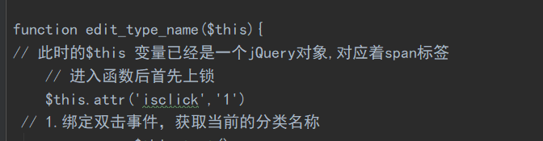

Djiango项目实战
# 2020.4.17 - 4.19
万能的方法
# 查询某一个类的全部属性和方法
print(dir(object))
# 查看函数或模块用途的详细说明
help(object)
# 查看具体类中某方法的详细说明
help(object.method_name)
# 当前项目的开发环境
- python版本：Python 3.6.10
- Django版本：2.2.10
- 利用的模板：
- 后台是Amazon UI后台
- 前台为Bootstrap4网上书店模板书店商城，Koparion
- 假如创建好项目无法运行
- 找到run/debug configurations
- 在parametes 内写入 runserver
# 项目的结构搭建
1.创建项目，到一个xjq_django 下执行 django-admin startproject bookshop
- 创建static文件夹，用于存放静态文件(html页面所需要的css和js)
3.在bookshop文件夹下创建两个个app 执行
- python manage.py startapp myhome 前台
- python manage.py startapp myadmin 后台
4.配置bookshop 内的settings
INSTALLED_APPS（安装app） 内加入新创建的 myhome 和 myadmin 两个app
配置TEMOLATES模板文件的读取路径
[os.path.join(BASE_DIR, 'templates')]数据库的配置（下面为mysql的配置）
- 配置好打开数据库的名字（bookshop）
- 登录数据库的操作用户（root）
- 登录数据库的操作用户的密码（空）
- 数据库端口号默认是3306
再打开cmd，mysql内创建一个名叫bookshop的数据库
- 1.进入mysql mysql -u root -p
- 2.创建数据库 create database bookshop default charset=utf8mb4;
- 相关mysql操作可以到桌面上的mysql相关进行复习
- 配置时区和语言
- 设置语言 zh-Hans 为中文 en-us 为英文
- LANGUAGE_CODE = 'zh-Hans'
- 设置时区 亚洲上海
- TIME_ZONE = 'Asia/Shanghai'
6.在templates模板文件价和static静态文件夹内都创建爱你myadmin和myhome两个文件
因为前后台用的模板不一样，所以前后台运用的css和jss也不一样
7.在static内创建一个upload文件夹，用于存放前后台都需要的图片存放
至此，基本文件目录创建完成
# 前台页面和后台页面的基本搭建
- 把前台后后台用到的模板和模板所需的静态文件，分别拷贝到对应的templates和static文件夹中的不同分类中
- 利用替换将原来的assets/

- 修改为/static/myadmin
- 前台也是如此，这样页面的基本搭建就完成了
# 后台开发
功能
注册
会员管理
- 查看会员列表，查看详细信息，禁用，修改，删除，添加（正常网站都无删数据的功能）（数据对于公司来说是无价滴），用禁用来代替
图书分类（暂时不做）
图书商品
订单详情
权限管理
# 会员管理页面的搭建
- 视图里面添加对对应的函数
路由里面添加对应的路由
利用反向解析路由，来配置index.html内的a链接的值

- htm内属性的值必须在引号内，
- 反向解析固定写法**{% url '写你想要跳转页面的名字' %}**
- <i> 标签显示斜体文本效果。
- 标签<ul>定义无序列表
- 在templates文件夹内创建，一个users文件夹，里面存放关于用户的页面模板
- users内的index页面是继承了myadmin后台文件的index.html页面
# 继承某个页面
{% extends 'myadmin/index.html' %}
# 重写html里的某个代码块,block包裹， con，为包裹内容的name
{% block con %}
中间为想要重写的html代码
{% endblock %}
重写会员管理的模块内容，其余的和首页无差别。
python 格式化代码
- Ctrl + Alt + L
# 后台添加页面和模型的设计
- 快捷键缩进 Tab， 缩退，shift+Tab
# 用户模型的建立与构想
| 列名 | 字段(属性名) | 类型（在数据库中的存储形式） | 说明 |
|---|---|---|---|
| ID | id | 主键 | |
| 用户名 | User_name | Varchar | |
| 密码 | Pass_word | char(80)[需要用到加密] | |
| 手机号 | Phone | char(11) | 唯一索引 |
| 性别 | Sex | Tinyint | |
| 年龄 | Age | Tinyint | |
| 注册时间 | Add_time | Datetime | |
| 最后登录时间 | Save_time | Datetime | |
| 状态 | Status | Tinyint | 默认为0，禁用为1 |
| 头像 | Face_url | Varchar | 存储头像的路径 |
# 模型的设计（简称数据库的设计）
https://docs.djangoproject.com/zh-hans/2.2/ref/models/fields/#datetimefield

模型设计好后，进行数据库的迁移
# 数据库的迁移
- 1.在bookshop项目文件路径内
- 执行迁移准备
- python manage.py makemigrations
- 2、再执行迁移操作
- python manage.py migrate
- 要在当前项目bookshop下执行
# 创建一个表单from来接收web发来的数据
表单能接收当前web页面的信息然后再提交给后台进行处理
想要表单能够接收图片，from里面方法必须为post，且有enctyppe
- from表单必须要写明提交给哪个网页，然后由那个网页的后台views来进行逻辑处理
- action="{% url 'myadmin_user_add' %}
由于是post提交，还需要手动加上csrf_token验证
<form action="{% url 'myadmin_user_add' %}" class="am-form tpl-form-line-form" method="post" enctype="multipart/form-data"> {% csrf_token %}
至此，from表单内的数据才可以提交到另一个网站上去，也可以提交给当前页面的后台进行处理，这里就是提交给当前页面的后台进行处理数据
# 后台处理数据
# 接收web的数据进行处理
- 前提：请求方法为POST
- 后台逻辑：
- 接收表单数据，数据为dict对象，并把认证的csrf弹出

- 对密码进行加密
- 判断是否有头像上传
- 最后把数据存入数据库中，需要把models文件导入进去
# 2020.4.17 - 4.19
# 后台处理web上传的图片
https://docs.djangoproject.com/zh-hans/2.2/ref/request-response/#attributes
参考网站，处理的是请求对象中的文件属性
# 上传的文件需要改名
防止不同的人上传同一个名字的文件，在数据库中造成覆盖
实现逻辑
- 先从web端拿到文件，利用.name.split分割为list，pop出文件的类型
- 判断是否为规定图片的类型
- 定义存储图片的名字，利用随机数的产生来命名，进行字符串相加
- 打开当前文件的根目录下，将文件写入到服务器电脑上的目录下
- 再把该文件的路径给存入数据库中
a = '1,2,3' x = a.split(',').pop() print(x) # 剩下的是3 a = '1,2,3' x = a.split(',') x.pop() print(x) # 剩下的是 1,2 a = '1,2,3' x = a.split(',') print(x.pop()) # 剩下的是 3 pop()方法返回的是弹出的元素，默认弹出最后的一个元素
# 上传图片的预加载
在web中暂时显示要上传的图片
实现技术
- JavaScript脚本语言实现
实现逻辑
- 获得当前 标签的控制权，给他绑定一个事件函数
- 判断是否选择了图片
- 否：获得
标签控制权，设置src属性为空
- 是：获取当前用户选择的图片的对象，然后将对象的值赋予img标签的src
- 否：获得

# 2020.4.27 - 5.1
# 后台显示数据库中的数据
逻辑：
- 导入模板类 from . import models
- 得到数据
- 分配数据
加载入模板
在html网页中使用数据需要在两个大括号内进行
而代码则是需要一个大括号加一个%
# 利用ajax完成不跳转删除


# 2020.5.21-30
# 对数据库进行搜索数据
select_type = request.GET.get('select_type', None)
key_words = request.GET.get('key_words', None)
if select_type:
# 当搜索条件不为空
if select_type == 'all':
from django.db.models import Q
# 参考文档
# https://docs.djangoproject.com/zh-hans/2.2/topics/db/queries/#complex-lookups-with-q-objects
data = data.filter(
Q(id__contains=key_words)
| Q(User_name__contains=key_words)
| Q(Phone__contains=key_words)
)
# select * from users where id like '%keywords%' or username like '%keywords%' or Phone like '%keywords%'
# return HttpResponse(f'<script> alert("依据全部搜索");history.go(-1) </script>')
else:
search = {f'{select_type}__contains': key_words}
data = data.filter(**search)
# return HttpResponse(f'<script> alert("其余"); history.go(-1) </script>')
# 分配数据
context = {'data': data}
# 加载模板
return render(request, 'myadmin/users/index.html', context=context)
函数传参前面加两个**代表，以 v1=k1,v2=k2,v3=k3....这么传进去
# 将数据库中的数据进行分页处理
"""分页功能"""
# 参考文档https://docs.djangoproject.com/zh-hans/2.2/topics/pagination/
from django.core.paginator import Paginator
# 实例分页对象，传入数据，以及要分几页
data = models.Users.objects.all()
p = Paginator(data, 5)
# 获取当前页码,默认为1
page_index = request.GET.get('page', 1)
# 根据页码获得当前页的数据
data = p.page(page_index)
# 分配数据
context = {'data': data}
# 加载模板
return render(request, 'myadmin/users/index.html', context=context)
# 分页优化
- 分页优化要借助下面的模板自定义标签
- 在应用中创建一个文件，在文件中写入内容，自己定义需要的功能函数
- 第一个文件是复制该应用下的同名文件，第二个pagetag.py 是自己写的
- 作用：能在html页面中，使用函数

# 在模板中自定义标签
- 也就是pagetag.py 内的代码，
- 实现了分页优化。
from django import template
from django.utils.html import format_html
register = template.Library()
# 自定义过滤器
@register.filter
def xjq_upper(val):
return val.upper()
@register.simple_tag
def jia(a, b):
return int(a) + int(b)
# 自定义分页页码的显示的标签
@register.simple_tag
def show_page(total_page, request):
# 要求，显示的页码数不能超过十个
# 定义开头显示的页码和结尾显示的页码
page_now = request.GET.get('page', 1)
page_now = int(page_now)
start = page_now-5
end = page_now+5
# 判断，当前页面处于左右两边的临界区域
if page_now < 6:
start = 1
end = 10
if page_now > total_page-4:
start = total_page-9
end = total_page
if total_page <= 10:
start = 1
end = total_page
page_html = ''
page_html += f'<li><a href="?page={1}">首页</a></li>'
if page_now-1 < 1:
page_html += f'<li class="am-disabled"><a href="?page={page_now - 1}">上一页</a></li>'
else:
page_html += f'<li><a href="?page={page_now-1}">上一页</a></li>'
for i in range(start, end+1):
# 如果是当前页，需要高亮
if i == page_now:
page_html += f'<li class="am-active" ><a href="?page={i}">{i}</a></li>'
else:
page_html += f'<li><a href="?page={i}">{i}</a></li>'
if page_now + 1 > total_page:
page_html += f'<li class="am-disabled"><a href="?page={page_now + 1}">下一页</a></li>'
else:
page_html += f'<li><a href="?page={page_now + 1}">下一页</a></li>'
page_html += f'<li><a href="?page={total_page}">尾页</a></li>'
return format_html(page_html)
- 在html页面中使用我们自己写的函数
- {% load 文件名 %}
- {% 函数名 函数参数 %}
{% load pagetag %}
<!-- <li class="am-disabled"><a href="#">«</a></li> -->
{% show_page data.paginator.num_pages request %}
<!-- <li class="am-active"><a href="#">1</a></li> -->
# 2020.5.31-6.2
# 图书分类模块的设计
- 图书拥有的操作
- 添加，列表显示，删除，编辑
- 图书分类模型：
| 列名 | 字段 | 类型 | 说明 |
|---|---|---|---|
| ID | id | 主键 | |
| 分类名称 | Book_name | 字符串 | |
| 父级ID | Book_pid | 数字 | |
| 路径 | Book_path | 字符串 |
分类
ID 分类名 父级ID 路径path
1 人文社科 0 0，
2 小说 0 0，
3 经济管理 0 0，
4 古籍 1 0,1，
5 古经 4 0,1,4
6 当代小说 2 0,2
# 图书分类模型
class BookType(models.Model):
Book_name = models.CharField(max_length=10)
Book_pid = models.IntegerField()
Book_path = models.CharField(max_length=50)
# 数据库的迁移
- 1.在bookshop项目文件路径内
- 执行迁移准备
- python manage.py makemigrations
- 2、再执行迁移操作
- python manage.py migrate
- 要在当前项目bookshop下执行
# 对myadmin后台视图进行优化
- 1.在myadmin应用文件下创建views文件夹
- 2.把views文件夹变成一个包，需要有____init____.py这个文件
- 需要把views下的所有.py文件的名字都写入初始化文件中
- 3.对于处理不同模型的视图函数，建立不同的专属文件来处理
# 修改后的文件目录

- init文件的内容
__all__ = [
'IndexViews',
'BooktypeViews',
'UsersViwes',
]
- 更改后的myadmin文件夹下的urls.py文件内容需要进行改变
# 对图书分类进行初始化操作

书写基本的http响应
在urls中添加相应的路由

- ***在myadmin的index.html中修改a链接的跳转网址

# 图书分类添加的实现
- 图书分类存在所属关系，父级，子集存在着关联
- 下面是完成对添加网络请求的操作
def BookType_add(request):
types = models.BookType.objects.all()
context = {'types': types}
if request.method == 'GET':
return render(request, 'myadmin/booktype/add.html', context=context)
else:
# 接收表单数据
data = request.POST.dict()
data.pop("csrfmiddlewaretoken")
# {'Book_pid': '1', 'Book_name': '玄幻'}
# 判断当前添加的分类是否为顶级分类
if data['Book_pid'] == '0':
data['Book_path'] = '0,'
else:
# {'Book_pid': '2', 'Book_name': '修仙'}
# path 是父级的path数据加上当前的父级Book_pid
# 获取父级对象
obj = types.get(id=data['Book_pid'])
data['Book_path'] = obj.Book_path + data['Book_pid']+','
# {'Book_pid': '1', 'Book_name': '斗破苍穹', 'Book_path': '0,1,'}
# 进行数据的添加
try:
obj = models.BookType(**data)
obj.save()
url = reverse('myadmin_BookType_index')
# /admin/BookType/index
return HttpResponse(f'<script>alert("图书分类添加成功");location.href="{url}"</script>')
except:
return HttpResponse(f'<script>alert("图书分类添加失败");history.back();"</script>')
return HttpResponse("BookType_add")
关键是如下逻辑
# 获取父级对象 # path 是父级的path数据加上当前的父级Book_pid obj = types.get(id=data['Book_pid']) data['Book_path'] = obj.Book_path + data['Book_pid']+','
# 对数据库内的层级关系进行排序显示
对应视频235
原来的显示如下

正确的应该是玄幻下面是初级玄幻，以及斗破苍穹
出现上图现象原因是，python语句
data = models.BookType.objects.all()
# 这条语句，相当于在mysql中执行
# select * from myadmin_booktype;

对数据库进行操作
mysql执行语句
# concat函数可以拼接两个字段，合为一个字符串，新别名为paths, 然后以这个新的别名来进行从小到大的排序
# mysql中排序是按照ascall码进行排序的，所以第一列是最小，第二列是1.依次增大
select *, concat(Book_path,id) as paths from myadmin_booktype order by paths;
- 现在思考的问题就是如何把mysql的这条语句用python进行执行
# select * from myadmin_booktype;
# data = models.BookType.objects.all()
# select *, contcat(Book_path,id) as paths from myadmin_booktype order by paths;
data = models.BookType.objects.extra(select{'paths':'concat(Book_path,id)'}).order_by('paths')
context = {'data': data}
return render(request, 'myadmin/booktype/index.html', context=context)
# 处理缩进问题
- 让刚才已经分好类的内容进行不同程度的缩进
- 这样增加可读性
- 逻辑
- 根据不同类型的路线Book_path 中包含的逗号作为缩进的依据
- 每一个类型的缩进个数为逗号个数-1
for i in data:
# print(type(i), i)
# <class 'myadmin.models.BookType'> BookType object (1)
num = i.Book_path.count(',')-1
i.nbsp = '|----' * num
# ajax删除分类
视频236
删除逻辑
可以删除的类型满足的条件
- 该类型下没有子类
- 该类型下没有商品存在
def BookType_delete(request):
# 获取要删除的分离的id
id = request.GET.get('id')
# 判断当前类下是否含有子类
num = models.BookType.objects.filter(Book_pid=id).count()
if num:
return JsonResponse({'error': 1, 'msg': '该类下含有子类，不能删除'})
# 判断该类下是否含有商品
# 执行删除
try:
obj = models.BookType.objects.get(id=id)
obj.delete()
return JsonResponse({'error': 0, 'msg': '删除成功'})
except:
return JsonResponse({'error': 3, 'msg': '删除失败'})
# ajax编辑图书分离
# script代码语法出错不会报
所有的javascript代码都会失效
django 中所有的post请求都需要通过CSRF验证
双击文字，让他变成一个input类型的标签，可以直接在页面对类型进行更改
// ajax编辑分类名称
// type_name 所属span标签 $(this)是一个jQuery对象
$('.type_name').dblclick(function(){
// 解决多次点击双击仍有效的bug
// 利用上锁开锁原理，保证同一时间内只能触发一次，标签可编辑
is = $(this).attr('isclick')
// 1.检测是否上锁
if(is == '0'){
// 没上锁, 对当前标签进行编辑操作
edit_type_name($(this))
}
})
function edit_type_name($this){
// 此时的$this 变量已经是一个jQuery对象,对应着span标签
// 进入函数后首先上锁
$this.attr('isclick','1')
// 1.绑定双击事件，获取当前的分类名称
var name = $this.text()
var id = $this.parents('tr').find('.book_id').text()
//alert(name)
// 2.创建一个input输入框，把name放进去
var inp = $('<input value="'+name+'" style="color:black">')
// 3.把input放置到显示的位置
$this.html(inp)
// 自动全选内容
inp.select()
// 4. 给input绑定丧失焦点事件
inp.blur(function(){
// 这里的$(this）对应着input标签
// 5.丧失焦点后，获取更新后的name
var new_name = $(this).val()
// alert(new_name)
// 6.判断新的name是否发生了变化
if(new_name == name){
// 没变化，还原即可
$this.html(name)
}else{
// 7.发送ajax请求去后台，更新分类的Book_name
// $.post()参数：
// 1.提交的地址,
// 2.post请求提交的表单数据（以字典的形式传过去），
// 3.回调函数function,参数：接收视图函数发来的数据
// 4.回调接收的返回数据类型
// django 中所有的post请求都需要通过CSRF验证
$.ajaxSetup({
data:{csrfmiddlewaretoken: '{{ csrf_token }}'}
})
$.post('{% url 'myadmin_BookType_edit' %}',{'id':id, 'name': new_name}, function(data){
//alert(data['msg'])
// 8. 判断是否更新成功
if(data['error']==0){
// 9.显示新的名字
$this.html(new_name)
}else{
$this.html(name)
}
}, 'json')
}
// 当丧失焦点后解锁
$this.attr('isclick', '0')
})
}
这里面运用到了解锁，
# 上锁问题解锁开锁问题
- 初始状态设为开锁

每次双击进行判断，查看当前状态是否为上锁，不上锁，才能执行ajax不跳转编辑操作
每次进入编辑操作时，先上锁，防止二次操作
每次对一个标签操作完后，再进行解锁

# 2020.6.2 -
# 图书商城模型设计
# 图书商品拥有的功能
- 添加，删除，修改，列表显示
# 图书模型设计：
- 一个分类标签对应多本书，一对多
| 列名 | 字段名 | 类型 | 说明 |
|---|---|---|---|
| id | id | 主键 | |
| 所属分类 | Type_belong | 一对多 | |
| 书名 | Title | models.CharField | |
| 推荐语 | Tuijian | models.CharField | |
| 作者 | Author | models.CharField | |
| 出版社 | Publisher | models.CharField | |
| 出版时间 | Pub_date | models.DateTimeField | |
| 定价 | Price | models.IntegerField | |
| 库存数量 | Num | models.IntegerField | |
| 国际书号ISBN | Isbn | models.CharField | |
| 详情介绍 | Context | models.CharField |
# 图书商品模型
class Books(models.Model):
# 一对多，参数：当前类1对多的对象， 级联删除
# 主外关系键中，级联删除，也就是当删除主表的数据时候从表中的数据也随着一起删除
Type_belong = models.ForeignKey('BookType', on_delete=models.CASCADE)
Title = models.CharField(max_length=255)
Tuijian = models.CharField(max_length=255)
Author = models.CharField(max_length=50)
# 出版社
Publisher = models.CharField(max_length=100)
# 出版时间
Pub_date = models.DateTimeField()
Price = models.IntegerField()
# 库存
Num = models.IntegerField(default=10)
Isbn = models.CharField(max_length=13)
# 详情
Context = models.TextField()
# 图书封面图集模型
| 列名 | 字段 | 类型 |
|---|---|---|
| 所属图书 | Book_belong | 一对多 |
| 封面图url | Book_img_url | models.CharField |
# 图书封面图集
class BookImgs(models.Model):
Book_belong = models.ForeignKey('Books', on_delete=models.CASCADE)
Book_img_url = models.CharField(max_length=100)
设计好模型后
生成迁移文件
- 在bookshop目录下执行 python manage.py makemigrations
执行迁移文件
- python manage.py migrate
订单，
权限管理
# 图书商品的添加
- 注意
- 模型里有一对多的关系，所以那个属性应该对应着一个对象，而网页传来的是对象的id
def Books_add(request):
if request.method == 'GET':
context = {'types': select_all_types()}
return render(request, 'myadmin/books/add.html', context=context)
else:
# 接收表单数据
data = request.POST.dict()
data.pop('csrfmiddlewaretoken')
# 检测是否上传了图书封面
if not request.FILES.get('Img_url', None):
return HttpResponse(f'<script>alert("至少上传一张图片");history.back();</script>')
try:
# 添加图书对象
data['Type_belong'] = models.BookType.objects.get(id=data['Type_belong'])
book_obj = models.Books(**data)
book_obj.save()
except:
return HttpResponse(f'<script>alert("图书上传失败");history.back();</script>')
try:
# 图书封面图的处理
img_obj = models.BookImgs()
# 一个图书有多个图书封面
img_obj.Book_belong = book_obj
img_obj.Book_img_url = Upload_file(request, 'Img_url')
img_obj.save()
print(data)
except:
book_obj.delete()
return HttpResponse(f'<script>alert("图书封面上传失败");history.back();</script>')
url = reverse('myadmin_Books_index')
return HttpResponse(f'<script>alert("添加成功");location.href="{url}" </script>')
# 图书列表的显示
- 注意！：图书图片的显示比较特殊
def Books_index(request):
# 接收数据
data = models.Books.objects.all()
# 访问关联对象参考
# https: // docs.djangoproject.com / zh - hans / 2.2 / ref / models / relations /
# print(data[0].bookimgs_set.first())
context = {'data': data}
return render(request, 'myadmin/books/index.html', context=context)
<td> <img src="{{ i.bookimgs_set.first.Book_img_url }}" class="tpl-table-line-img" alt="" /> </td>
- Html中函数不能加括号()
# print(data[0].bookimgs_set.first().Book_img_url)
src="{{ i.bookimgs_set.first.Book_img_url }}"
# 添加富文本编辑器
把ueditor作为项目中的应用，加入到项目中去
- 作为一个APP ，和myadmin文件夹同级
- 在setting文件中配置app应用的加入
- 修改根路由文件，配置富文本编辑器的路由地址

在templates下的myadmin下创建demo.html
参考网址 http://fex.baidu.com/ueditor/#start-submit
css 会对富文本编辑器有影响
采用二分法，删除css样式对
# 多图开发插插件应用
从jq22.com白嫖插件，全是html插件
- 视频243